В этом уроке будет рассмотрен простой и быстрый способ моделирования покебола в бесплатном 3D редакторе Blender. Урок рассчитан на новичков, которые только начали знакомство с данной программой.
Нам потребуется стандартный пакет Blender и референсное изображение покебола, которое необходимо сохранить для использования в качестве фонового изображения.
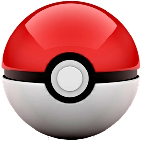
Покебол представляет собой сферу и состоит из четырех частей: двух полушарий, средней части и кнопки. Следовательно, непосредственно моделирование условно можно разделить на три основных этапа: создание полушарий, средней части и кнопки соответственно.
Итак, приступим.
1. Настройка сцены
Запускаем Blender и удаляем все стандартные объекты в сцене: клавиша «А» (два раза)=>«Х»=>«Enter». Переходим на вид спереди «1» и отключаем перспективу «5».
Клавишей «N» вызываем информационное меню справа. Внизу открываем вкладку «Background Images» и добавляем референсное изображение покебола через «Add Image»=> «Open».
Выравниваем изображение так, чтобы его кнопка расположилась по центру: координате «X» указываем значение равное 0.06, а «Y» - равное 0.5.
Подробней, о размещении референсных изображений в окнах проекции, вы можете узнать в этом уроке: Blender: фоновые изображения для каждого вида.
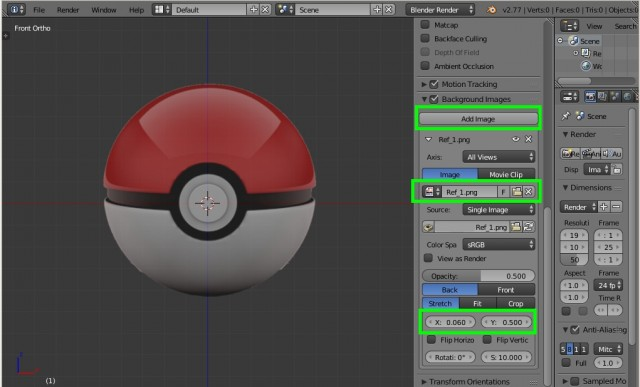
2. Моделирование полушарий
2.1 Создание сферы с нужными параметрами
Добавляем сферу: «Shift+A»=>«Mesh»=>«UV Sphere». Сейчас сфера меньше чем на референсном изображении, поэтому увеличиваем её при помощи клавиши «S»=>«5»=>«Enter», либо через появившееся меню внизу слева «Add UV Sphere» (выставляем значение в строке «Size» равное 5). Значения «Segments» и «Rings» оставляем по умолчанию (32 и 16).
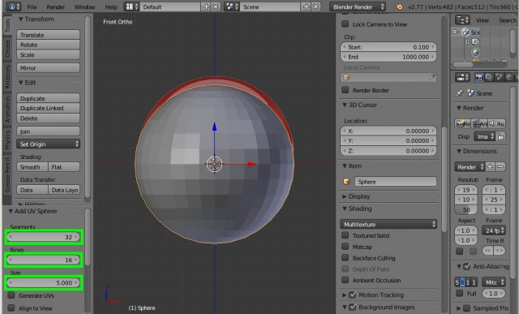
Сейчас сфера чуть ниже референсного изображения. Это связано с тем, что покебол на нём изображен немного под наклоном. Оставляем так, здесь важно, чтобы центр сферы совпадал с центром кнопки покебола.
2.3 Создание отверстия в центре сферы
Переходим в режим редактирования «Tab» и выделяем четыре центральных полигона, затем удаляем их. Удобнее это сделать следующим образом: правой кнопкой мыши щелкаем по центральной вершине, и, при зажатом «Ctrl», нажимаем один раз «+», затем нажимаем «Х»=>«Vertices».
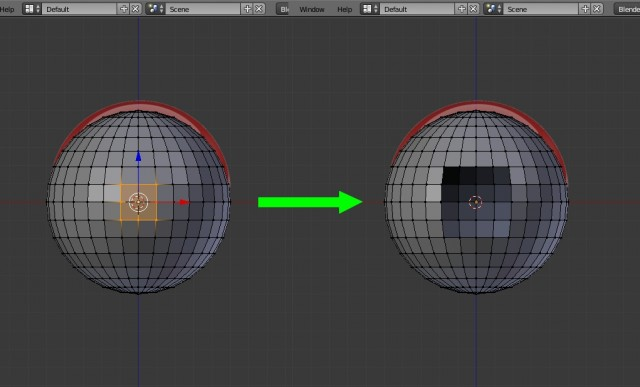
2.5 Делаем отверстие круглым
Выделяем вершины отверстия: при зажатой клавише «Alt» правой кнопкой щелкаем между любыми вершинами отверстия. Затем, комбинацией клавиш «Alt»+«Shift»+«S» округляем его, перемещая мышь максимально вправо.
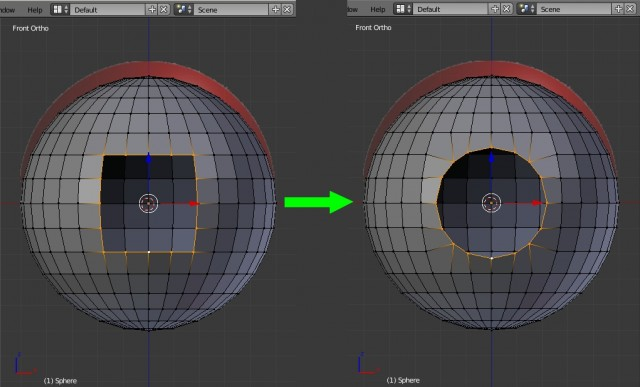
Теперь переходим на вид справа «3» и выравниваем вершины отверстия по оси «Y»: «S»=>«Y»=>«0»=>«Enter».
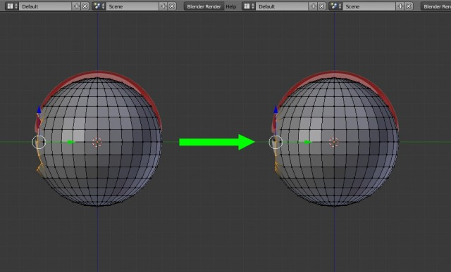
2.6 Выравнивание отверстия по референсному изображению
Переходим на вид спереди «1», включаем режим каркасного отображения объектов «Z». Как видим, полученное отверстие немного больше чем на референсном изображении. Поэтому, при помощи инструмента «Extrude» выдавливаем его ребра «E»=>«Enter» и масштабируем «S» до размеров как на референсе (уменьшаем примерно до значения 0.843 по всем осям).
Переходим на вид справа «3» и мышью перемещаем вершины отверстия влево по оси «Y» примерно на значение -0.15, либо в меню справа во вкладке «Transform» просто прибавляем его к имеющемуся значению по оси «Y».
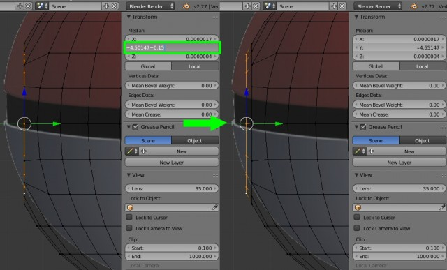
2.7 Установление расстояния между полушариями
Переходим на вид спереди «1», выделяем центральную линию сферы: при зажатой клавише «Alt» правой кнопкой мыши щелкаем между двумя любыми вершинами на этой линии. Создаем фаску «Ctrl+B» и мышью вытягиваем ей до границ половин полушарий на референсном изображении. В появившемся меню слева, количество сегментов устанавливаем 2.
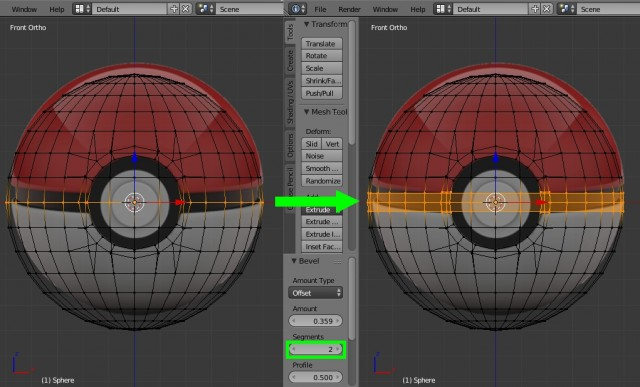
Снова выделяем среднюю линию и удаляем её «X»=>«Vertices».
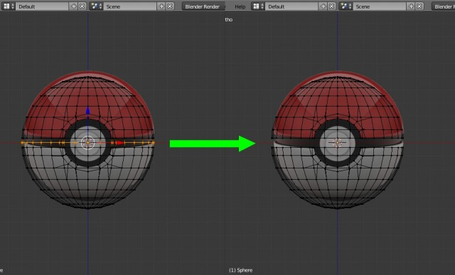
3. Создание средней части покебола
3.1 Устанавливаем толщину средней части
Выделяем крайние вершины двух полушарий при помощи зажатой клавиши «Alt». Переходим на вид справа «3» и выдавливаем ребра сначала по оси «Y»: нажимаем «E»=>«Enter»=>«S»=>«Enter», а значение по оси «Y» устанавливаем равное 0,97.
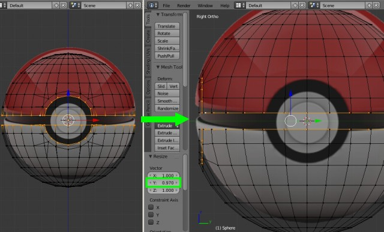
Теперь переходим на вид спереди «1» и убираем выделение вершин внутренней окружности: нажимаем «С» и при помощи нажатий колесом мыши на эти вершины, делаем их не активными, после нажимаем «Enter». Теперь зададим толщину по оси «X»: жмём снова «S»=>«Enter» и по оси «X» устанавливаем значение, как и в предыдущем случае равное 0,97.
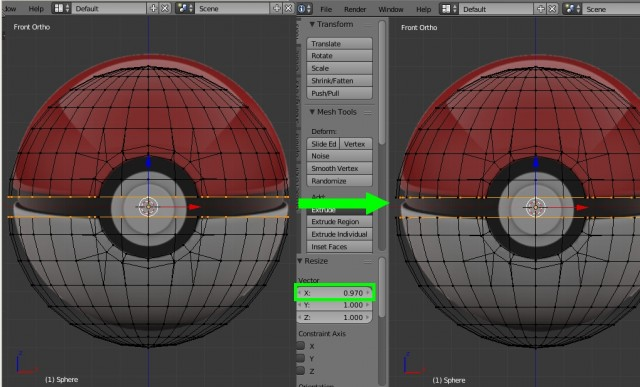
3.2 Соединение двух полушарий
Отключаем режим каркасного отображения «Z». Переходим в удобный перспективный вид: нажимаем клавишу «8» и три раза «6». Выделяем выдавленные только что вершины при помощи зажатой клавиши «Alt», затем соединяем их при помощи команды «Mesh»=>«Edges»=>«Bridge Edge Loops».
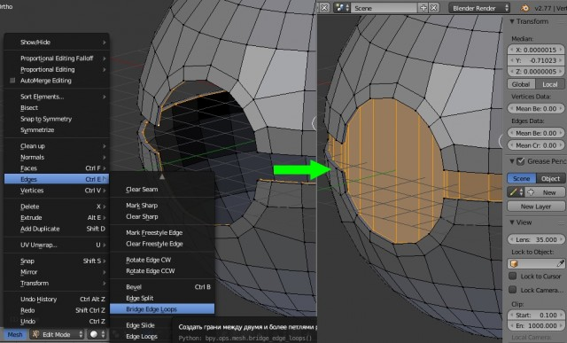
4. Моделирование кнопки
Переходим на вид спереди «1». Сбрасываем выделенные вершины нажатием на клавишу «А». Переходим в режим выделения граней на нижней панели, либо сочетанием клавиш «Ctrl+Tab»=>«Face», и при помощи клавиши «C» выделяем центральную окружность, нажимаем «Enter».
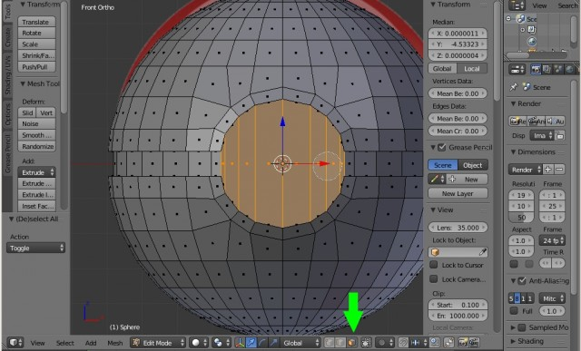
Включаем режим каркасного отображения объектов «Z». При помощи инструмента «Insert Faces», который вызывается клавишей «I» создаем окружность соразмерную с кнопкой на референсном изображении. После этого при помощи сочетании клавиш «Ctrl+R» создаем дополнительные ребра по центру сферы.
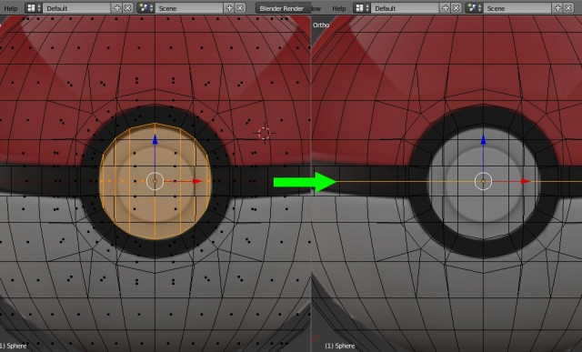
Выключаем режим каркасного отображения «Z», переходим в режим выделении вершин на нижней панели, либо сочетанием клавиш «Ctrl+Tab»=>«Vertex», выделяем полученную окружность и выравниваем её при помощи сочетания клавиш «Alt+Shift+S» и сдвигом мыши максимально вправо.
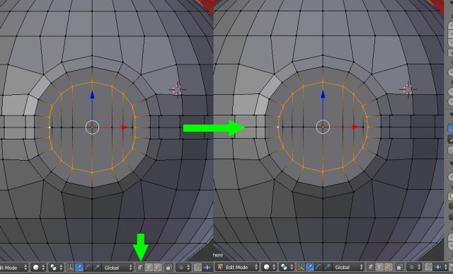
Теперь, при помощи клавиши «C», выделяем все вершины полученной окружности, по завершению нажимаем «Enter». Переходим на вид справа «3», и выдавливаем её «Е»=>«Enter» на 0,2 по оси «Z».
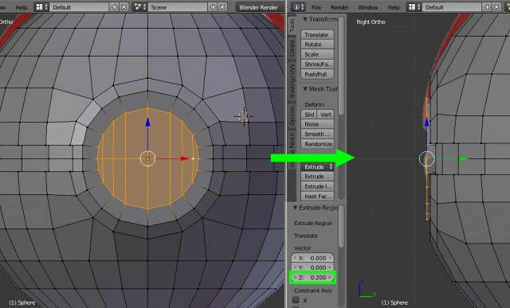
Переходим на вид спереди «1», включаем каркасный режим «Z». Нажимаем «Е»=>«Enter», и при помощи клавишы «S» масштабируем новую окружность до малой окружности кнопки на референсном изображении (это примерно до значения 0,693 по всем осям). Затем снова, как и в предыдущем случае, переходим на вид справа «3» и экструдирем окружность «Е»=>«Enter» на величину равную 0,2 по оси «Z».
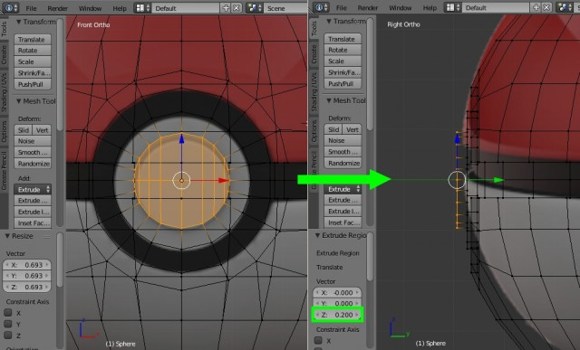
В принципе покебол готов, но для большего реализма необходимо добавить ему фаски, так как у каждого реального твердого объекта они есть.
5. Создание фасок
Здесь важно включить режим выделения ребер на нижней панели, либо сочетанием клавиш «Ctrl+Tab»=>«Edge». После этого выключаем режим каркасного отображения «Z», переходим в перспективный вид (клавишами «8», «6», «4» и «6»). Выделяем крайние ребра двух полушарий, а затем сочетанием клавиш «Ctrl+B»=>«Enter», в появившемся нижнем левом меню «Bevel», задаем значение фаски «Amount» равное 0,02, а количество сегментов «Segments» устанавливаем 2.
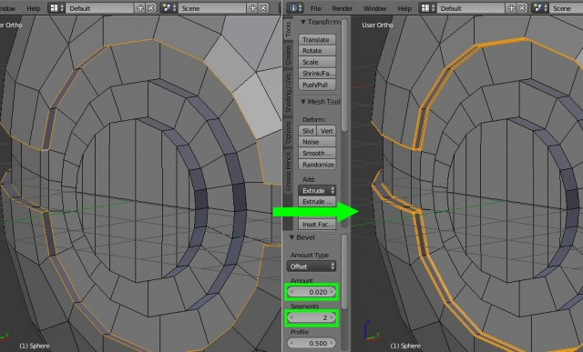
Теперь аналогично выделяем ребра кнопки и таким же образом задаем значение фаски равное 0,4.
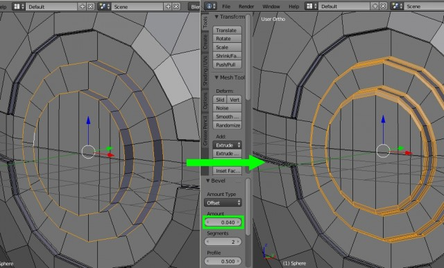
6. Сглаживание модели
Выходим из режима редактирования «Tab». В верхнем левом меню «Tools» во вкладке «Edit» нажимаем на кнопку «Smooth». Теперь применим модификатор «Subsurf», который расположен на крайней правой панели со значком синего гаечного ключа. Выбираем его из выпадающего списка «Add Modifier» и устанавливаем количество итераций равное 2.
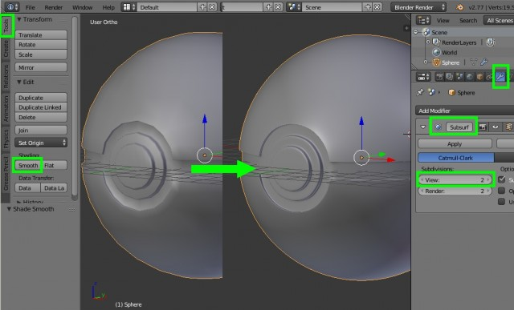
7. Текстурирование покебола
7.1 Создание развертки
Переходим в режим редактирования «Tab» и выделяем центральные ребра фасок, которые расположены на границе наших условно разделенных объектов (полушарий, средней части и кнопки). Так же необходимо выделить вертикальные ребра средней части сзади покебола.
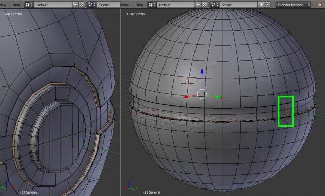
Теперь в верхнем левом меню «Shading/UVs» во вкладке «UVs» при помощи инструмента «Mark Seam» создаем швы. На оранжевых линиях должны появиться красные. Это и есть швы.
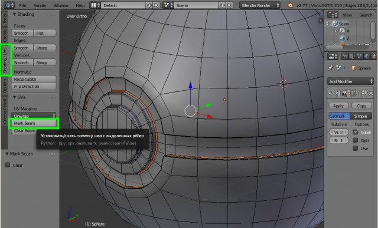
Открываем окно развертки. Для этого в правом верхнем углу тянем мышью за треугольник влево до удобного размера, а затем в нижней панели выбираем «UV/Image Editor».
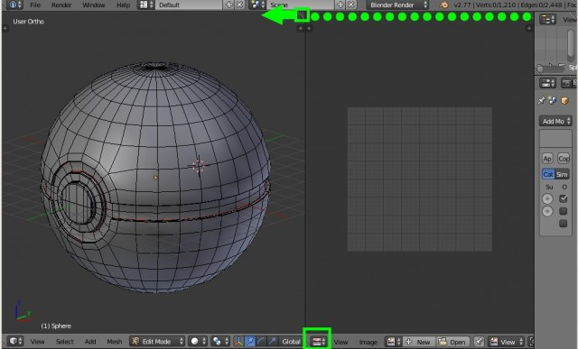
Теперь при помощи клавиши «А» выделяем все вершины модели и разворачиваем её командой «U»=>«Unwrap».
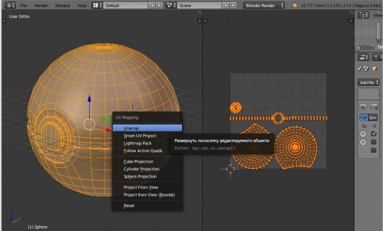
При помощи клавиш перемещения «G», вращения «R» и выделения всего объекта по указанной вершине (ребру, грани) «L» приводим полученную развертку к более удобному виду для текстурирования. Так как у покебола почти все части разного цвета, то для удобства разукрашивания целесообразно их расположить подальше друг от друга.
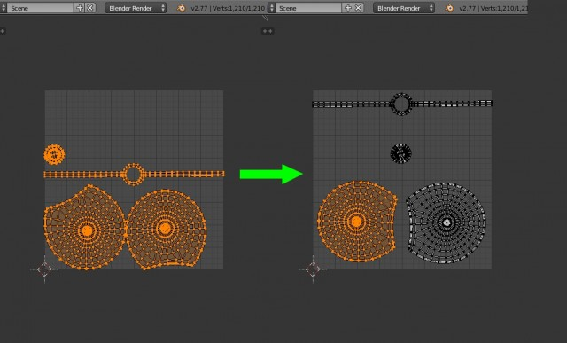
7.2 Создание текстуры
На нижней панели, нажимаем на кнопку «New». В появившемся меню цвет «Color» устанавливаем белый, убираем галочку «Alpha» (прозрачность текстуры), нажимаем «Ok». На этой же панели правее включаем режим 2D рисования «Paint».
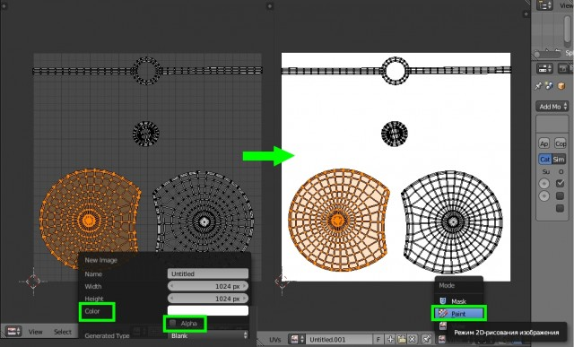
Далее клавишей «T» вызываем меню для рисования и во вкладке «Paint» отключаем прозрачность кисти (устанавливаем значение «Strenght» равное 1). Выбираем нужный цвет. Затем в окне с моделью включаем текстурный метод отображения, чтобы видеть, какая часть полушарий разукрашивается. Рисуем текстуру.
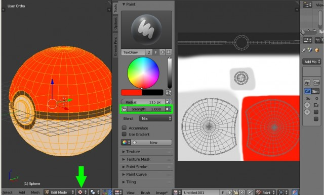
При помощи клавиши «F3», нарисованную текстуру можно сохранить в нужном формате.
Покебол готов. Далее, создав материал пластика в Cycles Render и настроив сцену, можно получить следующий результат.
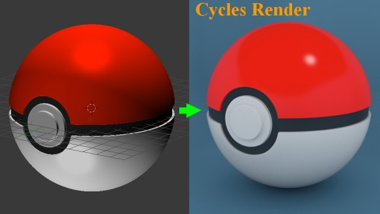